Welkom bij Wiezewasjes
welke edelsteen past bij jouw sterrenbeeld?
-
Edelstenen zijn prachtig, fantastisch en maken sowieso alles beter, toch?! Maar... Wist je dat sommige edelstenen ook nog eens heel goed bij bepaalde sterrenbeelden passen?
-
We hebben alle sterrenbeelden en de bijpassende geboortestenen die wij verkopen netjes voor jullie op een rijtje gezet.
Alle sterrenbeelden op een rijtje
Ram
Vuur - 21 maart t/m 20 april
Ram is het eerste teken van de dierenriem en markeert het begin van de lente! Dit mannelijke sterrenbeeld wordt geregeerd door Mars en staat bekend om zijn spontane, extraverte, dominante, directe, vechtlustige en onafhankelijke eigenschappen.
De edelstenen die bij Ram horen zijn: carneool, granaat, robijn en rode jaspis.
Bekijk alle sieraden voor RamStier
Aarde - 21 april t/m 20 mei
Stier is het tweede teken van de dierenriem. Dit vrouwelijke sterrenbeeld staat onder invloed van Venus en is te herkennen aan de standvastige, betrouwbare, koppige, praktische en degelijke eigenschappen.
De edelstenen die bij Stier horen zijn: agaat, mosagaat, malachiet, rookkwarts, aventurijn, chrysocolla, rhodoniet en rozenkwarts.
Bekijk alle sieraden voor StierTweelingen
Lucht - 21 mei t/m 21 juni
Tweelingen is het derde teken van de dierenriem, dit mannelijke sterrenbeeld wordt geregeerd door Mercurius. Gemini staat bekend om zijn wispelturige, intelligente, veelzijdige, rusteloze, nieuwsgierige en opgewekte karakter.
De edelstenen die bij Tweelingen horen zijn: chalcedoon, citrien, agaat, tijgeroog, aquamarijn en topaas.
Bekijk alle sieraden voor TweelingenKreeft
Water - 22 juni t/m 22 juli
Kreeft is het vierde teken van de dierenriem en markeert het begin van de zomer. Dit vrouwelijke sterrenbeeld staat in verbinding met de maan. Kreeft is te herkennen aan zijn huiselijke, empathische, emotionele, verzorgende en vasthoudende eigenschappen.
De edelstenen die bij Kreeft horen zijn: chalcedoon, maansteen, regenboog maansteen, opaal, rozenkwarts en carneool.
Bekijk alle sieraden voor KreeftLeeuw
Vuur - 23 juli t/m 23 augustus
Leeuw is het vijfde teken van de dierenriem. Dit mannelijke sterrenbeeld staat onder invloed van de zon en staat bekend om zijn moedige, royale, dynamische, temperamentvolle, zelfbewuste en stabiele karakter.
De edelstenen die bij Leeuw horen zijn: Leeuw past goed bij de volgende edelstenen:
Bekijk alle sieraden voor LeeuwMaagd
Aarde - 24 augustus t/m 22 september
Maagd is het zesde teken van de dierenriem en het laatste zomerteken. Dit vrouwelijke sterrenbeeld wordt geregeerd door Mercurius. Maagd staat bekend om zijn handige, zakelijke, kritische, analytische, geestige, praktische en ijverige eigenschappen.
De edelstenen die bij Leeuw horen zijn: carneool, peridoot, lapis lazuli, jaspis, amethist, aventurijn, chrysocolla, sodaliet en amazoniet.
Bekijk alle sieraden voor MaagdWeegschaal
Lucht - 23 september t/m 23 oktober
Weegschaal is het zevende teken van de dierenriem en markeert het begin van de herfst. Dit mannelijke sterrenbeeld staat in verbinding met Venus en is te herkennen aan zijn gebalanceerd, vriendelijke, besluiteloze, vreedzame, diplomatieke en verstandige karakter.
Bij weegschaal horen de edelstenen: jade, aquamarijn, toermalijn, toermalijnkwarts, howliet, regenboog maansteen en rozenkwarts.
Bekijk alle sieraden voor WeegschaalSchorpioen
Water - 23 oktober t/m 21 november
Schorpioen is het achtste teken van de dierenriem. Dit vrouwelijke sterrenbeeld wordt traditioneel geregeerd door Mars en later door Pluto. Schorpioen staat bekend om zijn sterke, intense, hartstochtelijke, vastberaden, scherpzinnige en grondige eigenschappen.
De edelstenen die bij schorpioen horen zijn: granaat, opaal, malachiet, toermalijn, agaat, jaspis en robijn.
Bekijk alle sieraden voor SchorpioenBoogschutter
Vuur - 22 november t/m 21 september
Boogschutter is het negende teken van de dierenriem. Dit mannelijke sterrenbeeld staat onder invloed van de planeet Jupiter en is te herkennen aan zijn openhartige, ongeduldige, enthousiaste, en humorvolle karakter.
Bij deze avonturier horen de volgende edelstenen: labradoriet, aventurijn, sodaliet, topaas, chalcedoon, opaal en lapis lazuli.
Bekijk alle sieraden voor BoogschutterSteenbok
Aarde - 22 december t/m 20 januari
Steenbok is het tiende teken van de dierenriem en markeert het begin van de winter. Dit vrouwelijke sterrenbeeld wordt geregeerd door Saturnus en is te herkennen aan zijn ambitieuze, stabiele, serieuze, betrouwbare, bescheiden en voorzichtige karakter.
Bij dit sterrenbeeld horen de edelstenen: rookkwarts, bergkristal, jaspis, regenboog maansteen, maansteen en zwarte toermalijn.
Bekijk alle sieraden voor SteenbokWaterman
Lucht - 21 januari t/m 19 februari
Waterman is het elfde teken van de dierenriem. Dit mannelijke sterrenbeeld staat traditioneel gezien onder invloed van Saturnus en later onder dat van Uranus. Waterman staat bekend om zijn vindingrijke, rusteloze, originele, artistieke en onbevooroordeelde karakter.
De edelstenen die bij Waterman horen zijn: chrysocolla, malachiet, turkoois, fluoriet, amazoniet, aventurijn en aquamarijn.
Bekijk alle sieraden voor WatermanVissen
Water - 20 februari t/m 20 maart
Vissen is het twaalfde en laatste teken van de dierenriem. Dit vrouwelijke sterrenbeeld wordt traditioneel gezien geregeerd door Jupiter en later door Neptunus. Vissen wordt gekenmerkt door zijn inlevende, fantasievolle, bescheiden, behulpzame en gevoelige eigenschappen.
Bij dit sterrenbeeld horen de edelstenen: aquamarijn, amethist, agaat, turkoois, opaal, regenboog maansteen en fluoriet.
Bekijk alle sieraden voor Waterman